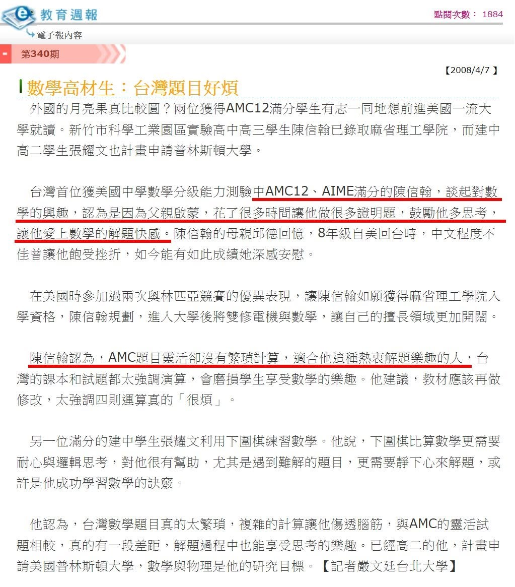

PK公開課：11/05(日)下午帶孩子們探索數學新視角
11/05(日) 高微老師
🎯PM1:30~2:30
PK中年級:邏輯世界vs移形換影
🎯PM3:00~4:00
PK高年級：最速捷徑vs數形合一
上個月永齡基金會舉辦的AI論壇上，邀請了在台灣度過高中時光，並在AMC12和AIME考試中取得滿分成績目前於OpenAI擔任要職的陳信翰，和ChatGPT推手奧特曼一起出席AI論壇。
陳信翰曾分享了自己對數學學習的獨到見解，他講述了自己是如何在父親的引導下，投入大量時間解決證明題，並因此對解題產生了濃厚的興趣。這與獵豹PK課程所倡導的理念不謀而合，即強調學生和家長不應將時間浪費在只強調特定解題技巧和套路的坊間小學競賽上。獵豹老師深知，從小受到競速賽約制的學生與家長 常常沒有耐心花20分鐘思考一個難題。一道問題 十分鐘沒解出就到處問人，焦慮不堪。
和陳信翰的父親一樣，獵豹PK課程常見家長和孩子一同學習，共同成長，也讓親子關係更加緊密。課程中適當的作業量，確保孩子有充足的時間思考，同時培養了孩子的受挫能力，並提高了他們穩固的數學水平。
孩子對學習的興趣是持續學習的首要條件。陳信翰指出，AMC的題目既靈活又不涉及繁瑣的計算，非常適合像他這樣熱愛解題樂趣的人。這與獵豹課程引入AMC思維的做法一致。在老師的引導下，PK的孩子們在不知不覺中提高了自己的水平，體會到了數學本身的樂趣，這也為他們未來更長遠的學習之路奠定了堅實的基礎。
真正的教育應該是點燃孩子內心火苗的過程，開發他們的思考能力和潛能。通過引導孩子思考，激發他們的好奇心，培養他們主動探索的習慣，並加強他們的數學思維，獵豹希望每個孩子都能將數學的力量轉化為前進的動力。
獵豹誠邀小學中高年級的學生11月5日參加這場數學的盛宴，也歡迎家長們旁聽！
「獵豹小學PK資優課程 學習地圖 特色說明」
